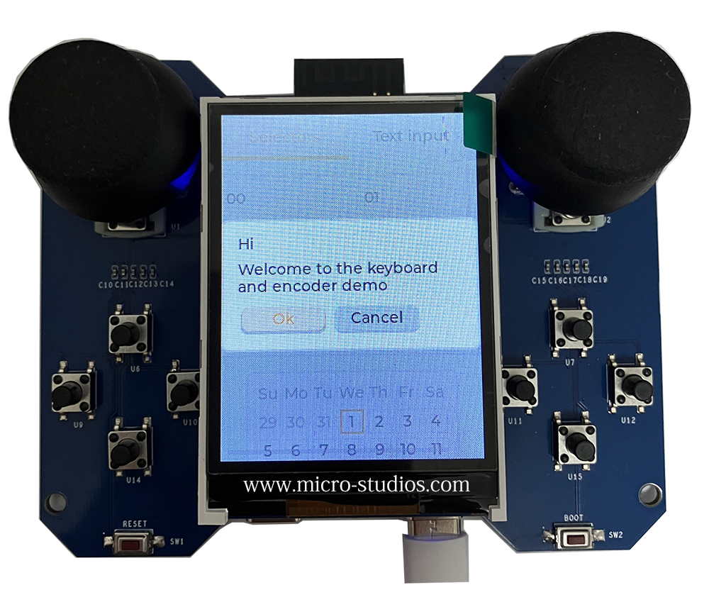

N1 Board

N1 FreeRTOS, WIFI, Bluetooth, JTAG, LVGL Development Board
The N1 board is developed by Michael HU for his FreeRTOS, WIFI, Bluetooth, JTAG and LVGL Lessons. The board based ESP32S3 16MB flash, 8MB ram module. It has the features as follows:
-
It has one 2.54 inch, 240x320 resolution TFT true color LCD.
-
It has two joysticks, eight normal gpio keys, one reset key and one boot key.
-
It wires out the 32 GPIO pins, TXD pin and RXD pin from the module. It has three 3.3v pins, three GND pins, and one 5v pin from USB interface. It is convenient to connect any other sensor modules.
-
It has a USB JTAG interface, same with the USB OTG interface. It can been used to learn the JTAG debug lessons.
-
It comes with one USB OTG adapter and one USB cable. The USB cable can be used to power up, debug and program the board. No need any other tools to learn all the current lessons, such as FreeRTOS, WIFI, Bluetooth, JTAG and LVGL Lessons etc.
The boards can be shipped around the world. You can drop an email to “micro at micro-studios.com” (replace at with @) to enquire the price and shipping matter.